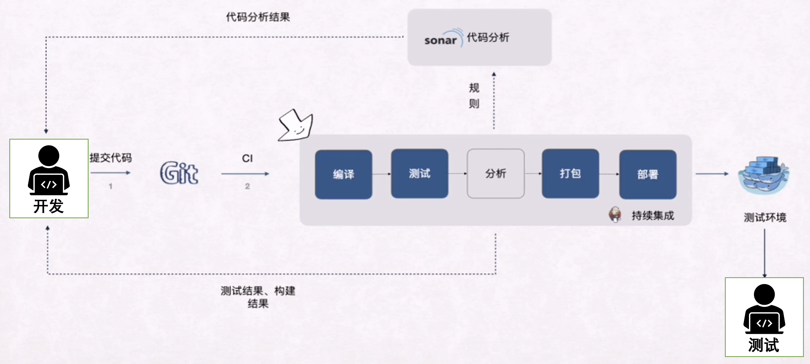
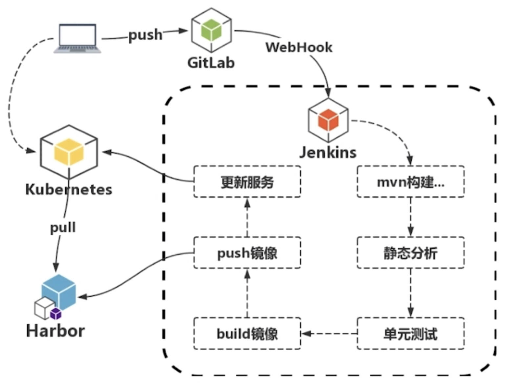
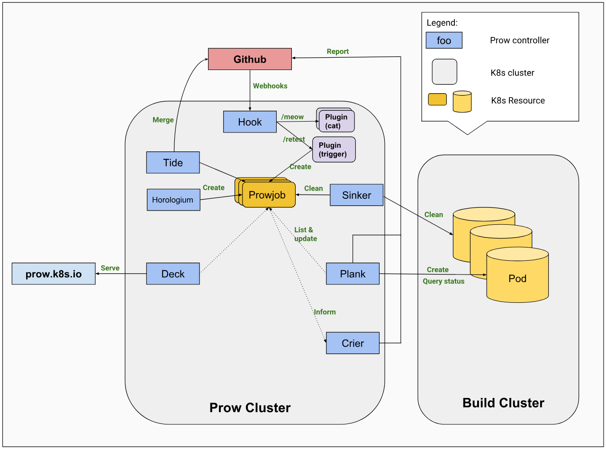
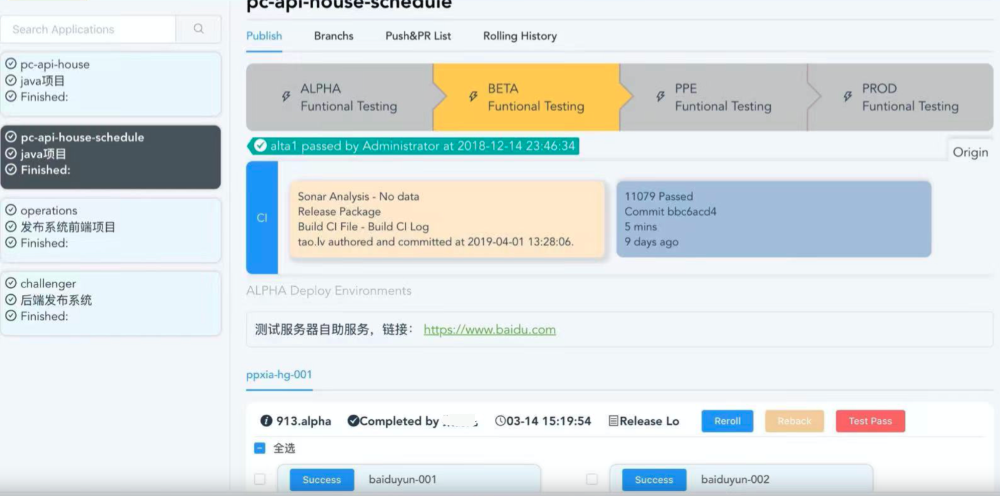
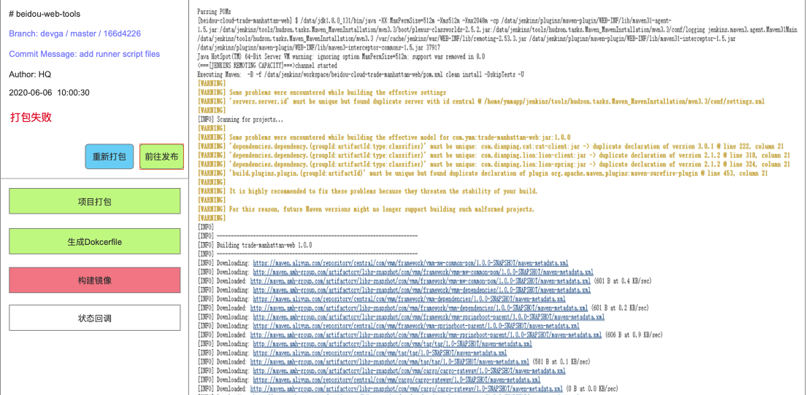
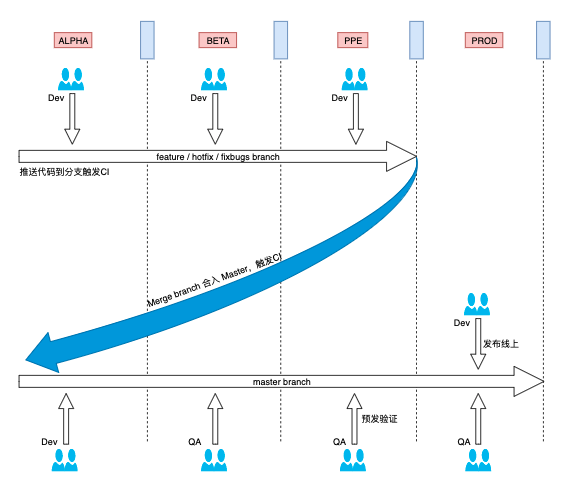
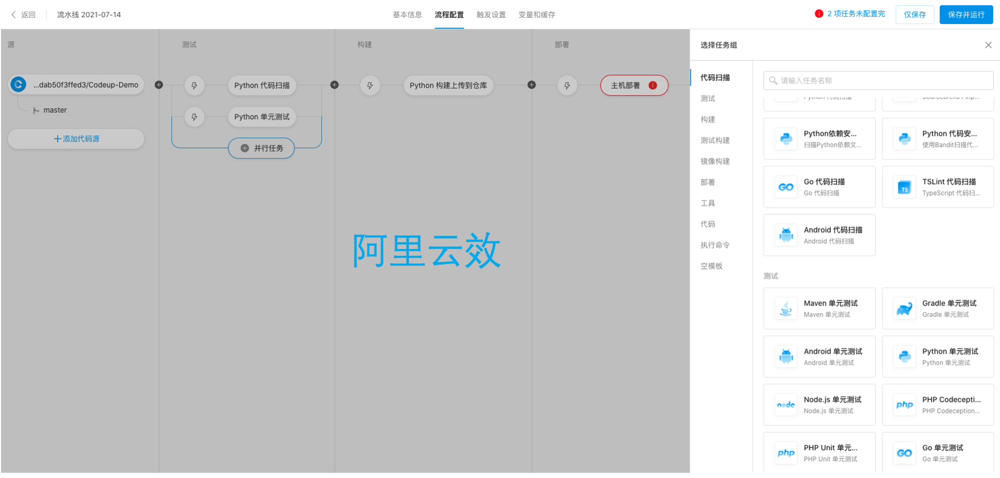
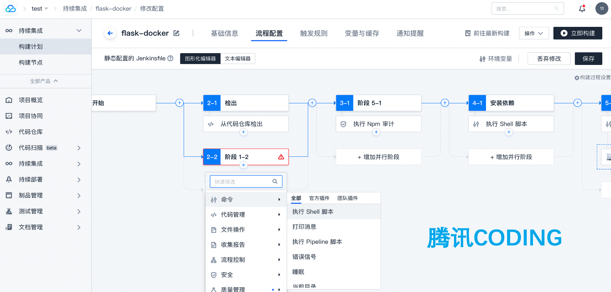

聊聊持续集成
持续集成，简称
CI，也不是一个新概念了；早在极限编程(XP)中，便作为12种实践之一被提出。最近三四年，随着DevOps概念逐渐被重视，CI/CD也成了市面上津津乐道的一个东西；然而也就是这么一个东西，即使每个公司都有着自己的实践方案，也仍然被其内部员工不停吐槽，这其中有很多原因，本文将会提到一部分；同时本文也将从多个角度，反复推敲CI，欢迎大佬们驻足留言，谢谢～
暖场热身
Q1：你知道什么是CI吗？
我相信很多人都听过CI，当我问出这个问题的时候，估计有人就会说了，这谁不知道啊，不就是Continuous integration嘛，整的好像谁不知道似的；紧接着，我要问了，那什么是Continuous integration呢。曾经我问过好几个开发朋友，他们也表示只知道字面意思，平时的工作”好像”也和CI没什么关系，应该指的就是打包、构建吧！！！
Q2: 你知道为啥需要CI吗？
可能有的开发会说，我不需要，这东西浪费我开发时间，我只想专心写代码，现在整的一堆麻烦事，严重影响我的开发效率，真的是搞事情！！！
Q3: 你知道作为一名Dev/Qa，需要关注CI的哪些东西呢？
只知道死干活的人，可能根本就不会去思考这类问题；说来也奇怪，往往是那些喜欢偷懒的人，懂得变通，可以想尽一切办法去偷懒。
Q4: 你知道大厂的CI都是怎么玩的吗？
诚然，即便在业界已经有众多开源解决方案的今天，当结合到每家公司的不同场景下，往往会呈现出不同的效应；每家公司的发展阶段和侧重点是不一样的，其所需要落地的目标也是不尽相同的；特别是在一家快速发展的公司，你会发现其CI流程也是在逐渐变化，不停发展演进的。这也就意味着，在设计CI的时候，你需要充分考虑后期的可扩展性、可维护性、以及健壮性；以避免后期出现大规模的改动。
Q5: 倘若让你去设计CI流程，你会如何设计？
一个好的CI流程，将会让开发团队极大受益，不仅能尽早地发现问题，还能维持高效、稳定、安全的业务迭代速度。
在介绍持续集成之前，我想先介绍下传统的开发过程下的坑：
- BUG总是很晚才被发现，并且难以修复
- 研发交付质量无法得到保障
- 变更频繁，研发效率低下
- 重复性劳动，无效等待过多，用户满意度低
如果你经历过或正在经历传统开发模式的伤与痛，你是否用过/想过：
- 什么时候可以不用再为开发/测试环境而苦恼
- 什么时候可以不用再麻烦运维帮忙调试环境
- 什么时候可以不用手动测试，自动帮我测试
- 什么时候可以只专注于代码的开发
既然如此，我们话不多说，一起来了解一下
CI吧；当然了，如果是大佬，我这就班门弄斧了，还望大佬们批评指正。
基础概念
- 持续：意为长期、频繁不断地
- 集成：将一些孤立的事物或者元素通过某种方式联系在一起，从而构成一个有机整体的过程
定义
- 是一种通过在应用开发阶段引入自动化来频繁向客户交付应用的方法
- 是一种软件开发实践，项目成员能够频繁地进行集成，并通过自动化方式来尽快发现问题
特点
- 需要有代码托管工具支持，如：github、gitee
- 需要有专门的集成服务器来执行集成构建，如：Jenkins、CircleCI、TravisCI
- 它是一个自动化的周期性集成测试过程，从检出代码、编译构建、运行测试、结果记录、测试统计等都是自动完成的，无需人工干预
作用
- 可以提高软件开发和交付过程的透明度和洞察力
- 有效减少重复过程，节省时间、成本和工作量，完全自动化，利于尽早发现问题
- 可以帮助开发人员更加频繁地（有时甚至每天）将代码变更合并到共享分支或“主干”中
目的
- 就是让产品可以快速迭代，同时还能保持高质量；即：高效率、高质量、高产出。
以上仅代表个人对CI的理解，关于基础概念这一块，可详细读一读「Martin Fowler的持续集成」
组成模块
仓库管理
一个好的仓库管理方式，在很多程度上，决定了研发之间的沟通协作方式；虽然是老生常谈的话题，但这个环节确实有必要拿出来捋一捋。到底是选择
mono repo还是multi repo呢？我们来看看这其中的优缺点：
mono repo
也就是常说的单体仓库（大仓模式），它是将所有的服务，全部放到一个代码库，包含了每个业务的服务代码和公共的Lib库、Tools集合；既然代码都放到一起，也就很好管理了，带来的好处也不少，比如：- 易于开发者测试
- 易于标准化代码
- 易于开展Code Review
- 易于共享公共组件，避免重复造轮子
- 易于重构
multi repo
和单体仓库相反，为多仓库方式（小仓模式）；每个服务代码单独成库，各自为营，彼此之间，井水不犯河水，做了很好的隔离。也就说多仓库具备如下特点：- 服务之间职责划分清晰
- 易于扩展，服务之间的解耦
- 限制clone范围，避免代码库完全泄漏
可以发现，mono repo的优点恰恰是multi repo的缺点，两者之间是互斥的关系；中小型的企业，一般用的是单体仓库，大型企业往往是多仓库；如果单论优点的个数，貌似mono repo确实更好一些，但其实也有一些大公司，用的是单体仓库，如：Google、Facebook、Salesforce.
分支管理
但凡提交过代码，就一定会涉及到分支，至少也会有一个
master默认分支；如果你是一个优秀的Coder，在分支使用上，必然有一定的讲究，比如分支的命名、分支的存活周期上。业内有很多的分支管理方法，包括著名的GitFlow、TBD以及从他们衍生出来的版本。

feature分支：具体要开发的功能的分支，完成后合并到developdevelop分支：开发的主分支，feature和release分支会基于此分支release分支：用于发布新版本的分支，完成后合并到develop和masterhotfix分支：用于紧急修复已发布的产品问题的分支，完成后合并到develop和mastermaster分支：与产品环境代码保持一致的分支，也就是每次发布完成之后发布的功能分支就要合并于此，以保持master更新
持续集成往往会基于分支做逻辑，不同的分支往往代表了研发的不同阶段；合并分支的过程，其实就是一次代码集成的过程；一个好的分支策略，不仅能使研发养成良好的开发习惯，还能加大持续集成发现问题的可能性。
代码质量
当然了，持续集成，最关心的当属代码质量这一块了；而在代码质量评估这个环节，可以做的事情很多，但却很难发现所有的问题，只能说尽可能地、尽快地去发现问题。Martin Fowler曾说过，”持续集成并不能消除Bug，而是让它们非常容易发现和改正“。
编译构建
这个是肯定的，提交的代码如果编译都没法完成，下面的几步，根本没必要进行。有些公司，可能还会包含打包构建出产物的环节，但这属于持续交付，不应纳入持续集成环节。代码评审
很多时候，我们会「因时间不够，需要急着上线」抑或是「代码太多，看不过来，也不想看」等原因不去Code Review。然而实际上，编写可维护代码的秘诀之一便是Code Review。这绝对不是一件易事，即便是Google，也花了很大的篇幅才说清楚他们在这一块的实践，感兴趣的朋友，可以来这里看看。很多代码管理平台，都自带了code review的特性，如github/gitlab/gitee等，也有对这一块做补充的Gerrit工具；前段时间，在github上看到了一个叫ReviewDog的产品，可以做到一些简单的自动化review工作，真感觉是个神器啊，必须respect一把。持续测试
做到快速重复自动的测试，持续评估代码质量；这个过程主要是为了发现bug，确保主逻辑能走通；能做的测试很多，例如：- 单元测试：依赖于研发和QA及时编写和更新测试用例
- 集成测试：多feature同时上线时的多功能测试阶段
- 性能测试：服务接口上线前的压力测试
代码分析
可以做的lint检测很多，市面上也有很多工具平台，包括但不限于SonarQube、TeskLink、FindBugs、CheckStyles等。除了这些，我们可能还会做安全漏洞扫描，以及自定义的lint检测任务。
设计实现
终于来到了，大伙儿最关心的设计实现环节；其实，实现持续集成的过程，就是将上述组成模块拼接到一块，形成自动化的流水线；而一套CI的设计与实现，往往跟一家公司的规模、发展阶段、以及所使用的技术栈紧密相关，当然也可能包含有很重的历史包袱，这里给出几个范例，具体还需要大伙儿结合自身场景出发。
典型场景

微服务场景

Cloud Native

其实总的来说，也就那么两条路子，要么自研、要么使用开源版；有能力和时间的公司，往往会选择自研，毕竟开源版，很多功能都是受限的，也无法很好地融入到企业技术栈，需要深度定制；所以你会发现，基于开源版二次开发，往往是大部分公司的路子。
参考案例
满帮
满帮由运满满+货车帮合并而来，技术栈也是融合了1-2年，CI/CD一块最终沿用了运满满的一套体系，而运满满的体系源自早期滴滴的一套体系。
满帮的CI是测试团队负责的，每次打包构建都是用户手动触发的，可以节省资源，降低成本，避免无用的构建任务；测试会在Jenkins构建的生命周期上做自己的逻辑，一旦构建过程中，发现问题，会去统计，并反馈到各个研发团队。研发团队用的也是小仓文化，采用的分支比较简单，feature分支+master分支，无论哪一个分支，都需要在qa环境（等价于ppe/pre预发环境）部署测试通过，然后由测试老师进行线上的部署动作。环境的划分是dev/qa/prod，每个环境下，又会有不同的机房、不同的k8s甬道，研发通常会在dev的不同甬道下做自己的业务测试。
饿了么
如果你对饿了么有一定了解，想必你也知道，饿了么的业务线（外卖、物流、商户、新零售、开放平台等）非常多，光AppID（应用服务标示）就多达上千（小仓模式），而这些业务往往需要快速迭代，很多时候的需求都是倒排期，各种CR需求也是常有的事情，加班也是出了名的；可想而知，饿了么每天的持续集成任务量，得有多大，不禁让人好奇饿了么的持续集成是如何设计实现的。
饿了么的持续集成，经历了三代的发展（Eless -> ElessV2/APPOS -> AONE）；AONE是饿了么融入阿里体系后，使用的方案，这个没办法，集团内技术栈打通并统一是肯定的趋势。每个版本的UI我也记得不是很清楚了，下面的图仅为作者印象还原样子，不喜勿喷！！！


环境划分
- alpha环境：开发自测环境
- beta环境：qa测试环境
- ppe/vip环境：预发环境，几乎等同于线上，仅允许办公网用户测试
- prod环境
不过当时的环境存在很严重的资源互斥使用问题，多个研发的需求，没办法同时测试；A开发将自己的代码发布到alpha环境后，B开发如果也想在alpha环境测试，就只能把A开发的代码覆盖掉，这个是有问题的，整个请求链路无法自由调整。虽然每个服务所在的集群有自己的SOA Cluster名，可以在服务注册中心中，修改上游服务调用的Cluster名，做到测试的目的，但依旧不能同时测试多人的开发需求。其实完全，可以根据前端传入不同Header、或者动态域名来做请求链路区分的。
分支策略
Eless在分支上并未做特殊的限制，整体上和git flow是一致的，发布的时候，也没有锁分支（仅限release分支），也就是说，任何一个分支都可以发布到线上，只不过每一个分支下的commit，必须是上一个环境发布测试通过后，手动点击test pass，才可以发到下一个环境；当准备ppe -> prod时，需要测试负责人点通过，才可以发布prod。使用AONE后，可以做集成测试，多个开发分支，会合并到一个集成测试分支下，用作多需求同时测试，这个过程会遭遇频繁地解决冲突，用起来也是够呛（😓）；不过冲突只是提早被发现了，这个过程无法避免。AoneFlow只有feature、release、master三类分支，但你却能看到其他分支模式的影子；它基本上兼顾了 TrunkBased 的“易于持续集成”和 GitFlow 的“易于管理需求”特点，同时规避掉 GitFlow 的那些繁文缛节。不过AONE平台集成了在线解决冲突、在线Code Review、发布完毕自动合并release分支到master分支的优点，可以保证线上的包都经过了所有环境的验证。

不同研发团队，可能会有所差别，具体看团队怎么玩。
哔哩哔哩
无论是饿了么，还是满帮，CI过程都脱离了研发场景，或者说比较简单；B站的CI和研发绑定的尤为密切，整个CI过程，围绕PR的生命周期来，只要CI（各种各样的Lint检测任务）不通过，就不让合入代码。不过有一点确实挺好奇，B站后端的CI和CD是完全割裂的，没有串起来，形成流水线。
B站的研发测试环境，主要依赖于服务节点染色的概念，和k8s甬道（给pod打标签）的方式是类似的，不过B站每个染色节点都是单独可测的，上下游请求链路完全打通，也就是说：它满足了多需求可以同时测试。
细心的朋友，可能会发现，上述的三个案例，正好是「第四点」说的三种设计实现方式。
阿里巴巴

腾讯Coding

不难发现，无论是阿里、腾讯，还是百度，他们的CI设计都是和CD完全串起来的，而且没有脱离研发场景。但是也不难发现，这三家公司的设计，大体都长一个样子，你懂我的意思吧（😂）。